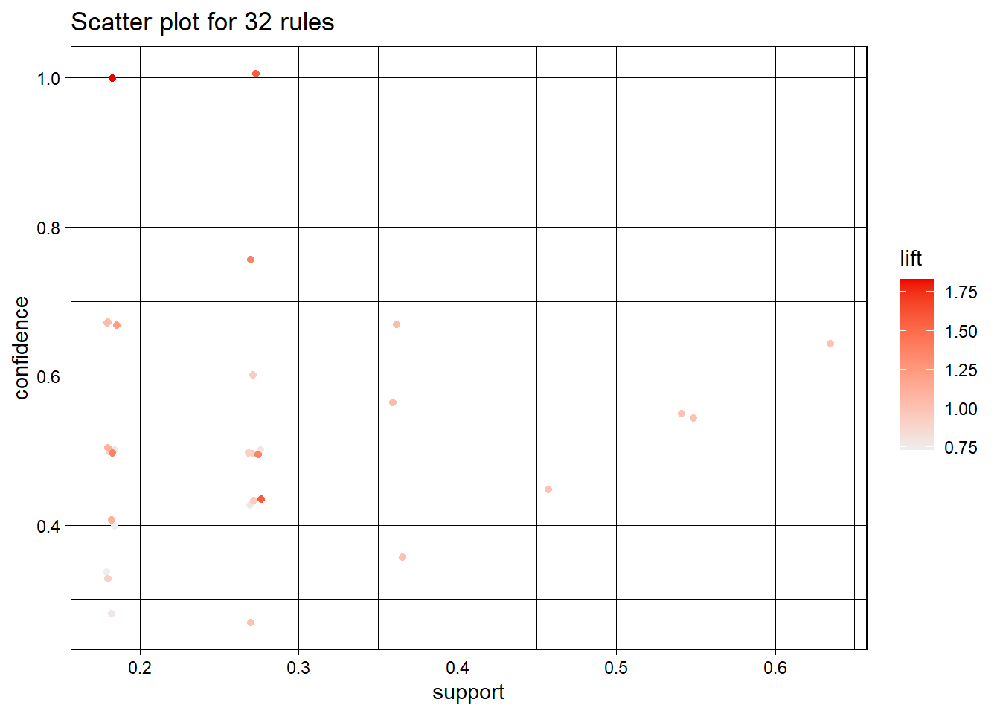

Chapter 2 Introduction
Welcome to your Data Mining code book!! I have provided information in both R and Python for this module (of course, most emphasis is in R…which means you might need to do some extra work in Python for some of these codes). Libraries in R that you will need for this module:
library(datasets)
library(arules)
library(arulesViz)
library(ggplot2)
library(dplyr)
library(rpart)
library(rpart.plot)
library(TH.data)
library(ISLR2)
library(lattice)
library(stats)
library(rattle)
library(RColorBrewer)
library(caret)
library(ROCR)
library(tidyverse)
library(cluster)
library(factoextra)
library(gridExtra)
library(NbClust)
library(dendextend)
library(class)
library(ClustOfVar)
library(MASS)
library(kableExtra)
library(partykit)
library(dbscan)
library(AmesHousing)
library(reticulate)
use_python("C:\\ProgramData\\Anaconda3\\python.exe")
#library(knitr)Also, be sure to load the following data sets:
check=read.table("Q:\\My Drive\\Data Mining\\Data\\Checking.csv",sep=',',header=T)
temp.dat=read.table("Q:\\My Drive\\Data Mining\\Data\\Grocery1.csv",sep=',',header=T)
load("Q:\\My Drive\\Data Mining\\Data\\breast_cancer.Rdata")
ames <- make_ordinal_ames() 2.1 Bootstrapping
Bootstrapping is a nonparametric tool that can be used to estimate variability about a statistic, create confidence intervals and perform hypothesis testing. The idea is that we use our sample as our population and randomly sample from it (with replacement). We create a whole bunch of samples this way, estimate the statistic of interest and then can use this information for our inference. The first example will estimate the median Carbon Dioxide reading from the Mauna Loa station (this data is an R data set and provides monthly data from 1959 to 1997). We will also calculate a 95% confidence interval for the median.
plot.co2=cbind.data.frame(co2,seq(as.Date("1959/1/1"),by="month",length.out=468))
colnames(plot.co2)[2]="Date"
### Visualize the data
ggplot(data=plot.co2,aes(x=Date,y=co2))+geom_line()
## Don't know how to automatically pick scale for object of type <ts>. Defaulting
## to continuous.
ggplot(data=plot.co2,aes(x=co2))+geom_histogram()
## Don't know how to automatically pick scale for object of type <ts>. Defaulting
## to continuous.
## `stat_bin()` using `bins = 30`. Pick better value with `binwidth`.
## Actual median of the data set
act.med=median(co2)
### Initialize the vector to run the bootstrap algorithm
boot.med=vector(length=10000)
for (i in 1:length(boot.med)){
boot.samp=sample(co2,replace=T)
boot.med[i]=median(boot.samp)
}
sd(boot.med)
## [1] 1.327341
act.med
## [1] 335.17
quantile(boot.med,probs = c(0.025,0.975))
## 2.5% 97.5%
## 332.75 337.79
ggplot(data=data.frame(boot.med),aes(x=boot.med))+geom_histogram() + labs(x="Bootstrap Sample",y="Frequency")
## `stat_bin()` using `bins = 30`. Pick better value with `binwidth`. The second example is exploring if the median price of homes in Iowa with air conditioning is significantly different than the median price of homes in Iowa without air conditioning (this is using the Ames housing data set from summer!). Recall that distributions of Sale Price were NOT normal (for both with and without air conditioning) and the variability of the distributions were very different. We are able to test the hypothesis:
The second example is exploring if the median price of homes in Iowa with air conditioning is significantly different than the median price of homes in Iowa without air conditioning (this is using the Ames housing data set from summer!). Recall that distributions of Sale Price were NOT normal (for both with and without air conditioning) and the variability of the distributions were very different. We are able to test the hypothesis:
\[H_{0}: Median_{YES} = Median_{NO}\]
\[H_{A}: Median_{YES} \neq Median_{NO}\]
by creating a confidence interval about the difference $ Median_{YES}-Median_{NO} $.
diff.stat=vector(length=10000)
yes<-ames %>% filter(Central_Air=="Y") %>% pull(Sale_Price)
no<-ames %>% filter(Central_Air=="N") %>% pull(Sale_Price)
for (i in 1:10000){
yes.vec <-median(sample(yes,length(yes),replace = T))
no.vec <-median(sample(no,length(no),replace = T))
diff.stat[i]<- yes.vec-no.vec
}
ggplot(data=data.frame(diff.stat),aes(x=diff.stat))+geom_histogram()## `stat_bin()` using `bins = 30`. Pick better value with `binwidth`.
## 0.5% 99.5%
## 58744.78 76840.30Since the confidence interval does NOT include 0, we would conclude that the medians appear to be significantly different.
2.1.1 Python for Bootstrapping
from matplotlib import pyplot as plt
import numpy as np
import statistics
from numpy import random
co2_py = r.co2
plt.hist(co2_py)## (array([50., 73., 58., 48., 44., 42., 37., 51., 40., 25.]), array([313.18 , 318.546, 323.912, 329.278, 334.644, 340.01 , 345.376,
## 350.742, 356.108, 361.474, 366.84 ]), <BarContainer object of 10 artists>)
## 335.17n = len(co2_py)
temp = []
for i in range(1000):
temp.append(statistics.median(random.choice(co2_py,n)))
#temp =statistics.median(random.choice(co2_py,n))
print(statistics.stdev(temp))## 1.3351758780776406## Lower 95% confidence interval for median 332.75## Upper 95% confidence interval for median 337.792.2 Adjusting p-values
The package p.adjust will do the Bonferroni adjustment, Benjamini & Hochberg and many other adjustments for p-values when you are conducting a lot of tests! All you need to do is send it a vector of p-values and it will return the adjusted p-values!
2.3 Transaction data
A basic concept you will need is how to deal with transactional data. Trasactional data is usually in the form of a long data set with multiple observation per “ID”. Take for example the following small data set:
| ID | Checking |
|---|---|
| Person 1 | |
| 1 | 2000 |
| 1 | 500 |
| 1 | 2500 |
| 1 | 5000 |
| Person 2 | |
| 2 | 18000 |
| 2 | 10000 |
| 2 | 300 |
| 2 | NA |
| Person 3 | |
| 3 | 600 |
| 3 | 200 |
| 3 | 100 |
Notice that there are four transactions for Person 1, four transactions for Person 2 (including a missing value) and three transactions for Person 3. We will need to “roll” these up into one observation per person.
new.check = check %>% group_by(ID) %>%
summarise(mean.check=mean(Checking,na.rm=T),std.check=sd(Checking,na.rm=T))It is HIGHLY recommended that you ALWAYS create a flag for missing values (do this BEFORE rolling up). The following code creates the flag for the missing values and then rolls everything up:
check$flag=ifelse(is.na(check$Checking),1,0)
new.check = check %>% group_by(ID) %>%
summarise(mean.check=mean(Checking,na.rm=T),std.check=sd(Checking,na.rm=T),na.check=sum(flag))| ID | mean.check | std.check | na.check |
|---|---|---|---|
| 1 | 2500.000 | 1870.8287 | 0 |
| 2 | 9433.333 | 8863.5960 | 1 |
| 3 | 300.000 | 264.5751 | 0 |
| 4 | 750.000 | 212.1320 | 0 |
| 5 | 11400.000 | 6503.8450 | 0 |
2.4 Association Analysis
Association analysis looks for “associations” among items to provide information on which items happen together more frequently. This could be used for marketing purposes to figure out which items should be stocked together; or it could be used in the medical profession to see which co-morbidities happen together. There are many situations in which you are interested in exploring and understanding theses associations!!
Most often, this data presents itself as transactional data. For example, if shopper 1 buys 10 items, you will see this in a data set with 10 lines (representing the 10 items bought) but with the same shopper ID value. Below is a snippet of a small grocery data set.
| ID | Grocery |
|---|---|
| 1 | bread |
| 1 | egg |
| 1 | papaya |
| 1 | oat packet |
| 2 | papaya |
| 2 | bread |
| 2 | oat packet |
| 2 | milk |
| 3 | egg |
| 3 | bread |
As you can see, there is a separate line for each item. If we want to analyze this data set with the package ‘arules’, we need the data to be wide (not long). In other words, one line per ID. We can create the wide data set in R by using the following line (and then “inspect” it or view it).
## items transactionID
## [1] {bread, egg, oat packet, papaya} 1
## [2] {bread, milk, oat packet, papaya} 2
## [3] {bread, butter, egg} 3
## [4] {egg, milk, oat packet} 4
## [5] {bread, butter, milk} 5
## [6] {milk, papaya} 6
## [7] {bread, butter, papaya} 7
## [8] {bread, egg} 8
## [9] {oat packet, papaya} 9
## [10] {bread, milk, papaya} 10
## [11] {egg, milk} 11The following code runs the association analysis and stores the results in the object rules. Once you have this stored object, you can view it and partition it in different ways..
## [1] "bread" "butter" "egg" "milk" "oat packet"
## [6] "papaya"# Create an item frequency plot for the top 3 items
itemFrequencyPlot(trans.dat,topN=3,type="absolute")# Get the rules
rules <- apriori(trans.dat, parameter = list(supp = 0.1, conf = 0.001, target="rules"))## Apriori
##
## Parameter specification:
## confidence minval smax arem aval originalSupport maxtime support minlen
## 0.001 0.1 1 none FALSE TRUE 5 0.1 1
## maxlen target ext
## 10 rules TRUE
##
## Algorithmic control:
## filter tree heap memopt load sort verbose
## 0.1 TRUE TRUE FALSE TRUE 2 TRUE
##
## Absolute minimum support count: 1
##
## set item appearances ...[0 item(s)] done [0.00s].
## set transactions ...[6 item(s), 11 transaction(s)] done [0.00s].
## sorting and recoding items ... [6 item(s)] done [0.00s].
## creating transaction tree ... done [0.00s].
## checking subsets of size 1 2 3 done [0.00s].
## writing ... [32 rule(s)] done [0.00s].
## creating S4 object ... done [0.00s].## lhs rhs support confidence coverage lift
## [1] {butter} => {bread} 0.2727273 1.0000000 0.2727273 1.571429
## [2] {bread, oat packet} => {papaya} 0.1818182 1.0000000 0.1818182 1.833333
## [3] {oat packet} => {papaya} 0.2727273 0.7500000 0.3636364 1.375000
## [4] {papaya} => {bread} 0.3636364 0.6666667 0.5454545 1.047619
## count
## [1] 3
## [2] 2
## [3] 3
## [4] 4oat.rules = apriori(trans.dat, parameter = list(supp=0.001, conf=0.8),appearance = list(default="lhs",rhs="oat packet"))## Apriori
##
## Parameter specification:
## confidence minval smax arem aval originalSupport maxtime support minlen
## 0.8 0.1 1 none FALSE TRUE 5 0.001 1
## maxlen target ext
## 10 rules TRUE
##
## Algorithmic control:
## filter tree heap memopt load sort verbose
## 0.1 TRUE TRUE FALSE TRUE 2 TRUE
##
## Absolute minimum support count: 0
##
## set item appearances ...[1 item(s)] done [0.00s].
## set transactions ...[6 item(s), 11 transaction(s)] done [0.00s].
## sorting and recoding items ... [6 item(s)] done [0.00s].
## creating transaction tree ... done [0.00s].
## checking subsets of size 1 2 3 4 done [0.00s].
## writing ... [2 rule(s)] done [0.00s].
## creating S4 object ... done [0.00s].oat.rules2 = apriori(trans.dat, parameter = list(supp=0.001, conf=0.8),appearance = list(lhs="oat packet", default="rhs"))## Apriori
##
## Parameter specification:
## confidence minval smax arem aval originalSupport maxtime support minlen
## 0.8 0.1 1 none FALSE TRUE 5 0.001 1
## maxlen target ext
## 10 rules TRUE
##
## Algorithmic control:
## filter tree heap memopt load sort verbose
## 0.1 TRUE TRUE FALSE TRUE 2 TRUE
##
## Absolute minimum support count: 0
##
## set item appearances ...[1 item(s)] done [0.00s].
## set transactions ...[6 item(s), 11 transaction(s)] done [0.00s].
## sorting and recoding items ... [6 item(s)] done [0.00s].
## creating transaction tree ... done [0.00s].
## checking subsets of size 1 2 done [0.00s].
## writing ... [0 rule(s)] done [0.00s].
## creating S4 object ... done [0.00s].## To reduce overplotting, jitter is added! Use jitter = 0 to prevent jitter.